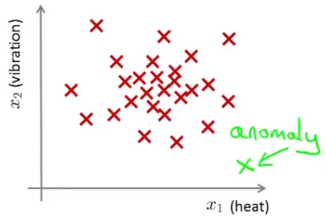
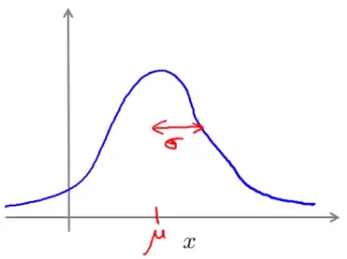
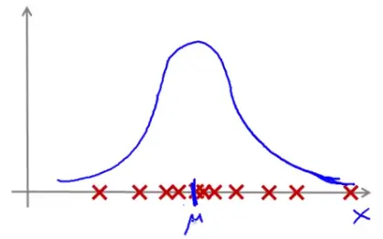
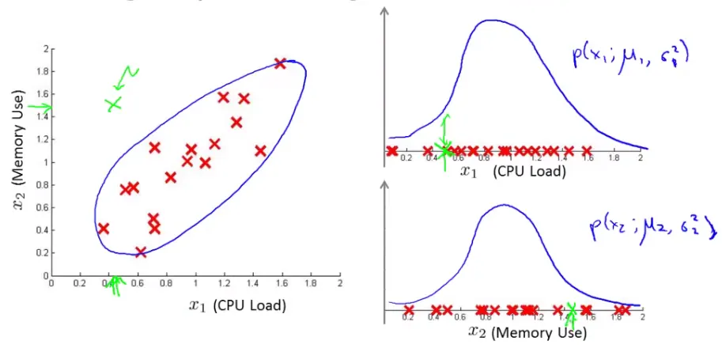
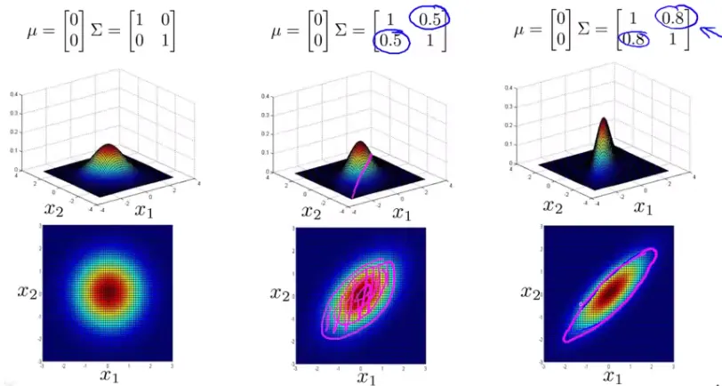

Anomaly detection involves identifying data points that significantly differ from the majority of the data, often signaling unusual or suspicious activities. This technique is widely used across various domains, such as fraud detection, manufacturing, and system monitoring.

I. Fraud Detection:
II. Manufacturing: In scenarios like aircraft engine production, anomalies can indicate defects or potential failures.
III. Data Center Monitoring: Monitoring metrics (memory usage, disk accesses, CPU load) to identify machines that are likely to fail.
$$ p(x; \mu; \sigma^2) = \frac{1}{\sqrt{2\pi\sigma^2}} \exp\left(-\frac{(x-\mu)^2}{2\sigma^2}\right) $$


Feature Selection: Choose features $x_i$ that might be indicators of anomalous behavior.
Parameter Fitting: Calculate the mean ($\mu_j$) and variance ($\sigma_j^2$) for each feature
$$ \mu_j = \frac{1}{m} \sum_{i=1}^m x_j^{(i)} $$
$$ \sigma_j^2 = \frac{1}{m} \sum_{i=1}^m (x_j^{(i)} - \mu_j)^2 $$
$$ p(x) = \prod_{j=1}^n \frac{1}{\sqrt{2\pi\sigma_j^2}} \exp\left(-\frac{(x_j - \mu_j)^2}{2\sigma_j^2}\right) $$
Below is the Python implementation of the Gaussian distribution, data fitting, and evaluation of anomaly detection systems based on the algorithm steps.
import numpy as np
# Function to calculate Gaussian Probability
def gaussian_probability(x, mean, variance):
coefficient = 1 / np.sqrt(2 * np.pi * variance)
exponent = np.exp(-((x - mean) ** 2) / (2 * variance))
return coefficient * exponent
# Function to fit Gaussian parameters (mean and variance) for each feature
def fit_gaussian_parameters(X):
mean = np.mean(X, axis=0)
variance = np.var(X, axis=0)
return mean, variance
# Function to calculate the probability of a new example using the Gaussian distribution
def compute_probability(x, mean, variance):
probabilities = gaussian_probability(x, mean, variance)
return np.prod(probabilities)
# Example dataset
X_train = np.array([[1.1, 2.2], [1.3, 2.1], [1.2, 2.3], [1.1, 2.4]])
X_cross_val = np.array([[1.0, 2.0], [1.4, 2.5]])
# Fitting the Gaussian parameters
mean, variance = fit_gaussian_parameters(X_train)
# Calculate the probability of a new example
x_new = np.array([1.2, 2.2])
probability = compute_probability(x_new, mean, variance)
print("Mean:", mean)
print("Variance:", variance)
print("Probability of new example:", probability)
# Performance Metrics (Precision and Recall)
# Note: This requires true labels and predicted labels
from sklearn.metrics import precision_score, recall_score
# Example true labels and predicted labels
y_true = np.array([0, 0, 1, 1])
y_pred = np.array([0, 0, 1, 0])
precision = precision_score(y_true, y_pred)
recall = recall_score(y_true, y_pred)
print("Precision:", precision)
print("Recall:", recall)Here are the results:
I. Gaussian Parameters:
II. Probability of New Example:
III. Performance Metrics:
I. Labeled Data: Have a dataset where $y=0$ indicates normal (non-anomalous) examples, and $y=1$ represents anomalous examples.
II. Data Division: Separate the dataset into a training set (normal examples), a cross-validation (CV) set, and a test set, with both the CV and test sets including some anomalous examples.
III. Example Case:
IV. Evaluation Metrics:
Below is the complete Python code for the implementation:
import numpy as np
from sklearn.metrics import precision_score, recall_score, f1_score
# Simulate dataset
np.random.seed(0)
# Normal examples
normal_examples = np.random.normal(0, 1, (10000, 2))
# Anomalous examples
anomalous_examples = np.random.normal(5, 1, (50, 2))
# Labels
y_normal = np.zeros(10000)
y_anomalous = np.ones(50)
# Combine the data
X = np.vstack((normal_examples, anomalous_examples))
y = np.concatenate((y_normal, y_anomalous))
# Shuffle the dataset
indices = np.arange(X.shape[0])
np.random.shuffle(indices)
X = X[indices]
y = y[indices]
# Data division
X_train = X[:6000]
y_train = y[:6000]
X_cv = X[6000:8000]
y_cv = y[6000:8000]
X_test = X[8000:]
y_test = y[8000:]
# Fit Gaussian parameters on the training set
mean, variance = fit_gaussian_parameters(X_train)
# Probability threshold
epsilon = 0.01 # This threshold can be tuned
# Compute probabilities for CV and Test sets
p_cv = np.array([compute_probability(x, mean, variance) for x in X_cv])
p_test = np.array([compute_probability(x, mean, variance) for x in X_test])
# Predict anomalies
y_pred_cv = (p_cv < epsilon).astype(int)
y_pred_test = (p_test < epsilon).astype(int)
# Calculate evaluation metrics for the CV set
tp_cv = np.sum((y_cv == 1) & (y_pred_cv == 1))
fp_cv = np.sum((y_cv == 0) & (y_pred_cv == 1))
fn_cv = np.sum((y_cv == 1) & (y_pred_cv == 0))
tn_cv = np.sum((y_cv == 0) & (y_pred_cv == 0))
precision_cv = precision_score(y_cv, y_pred_cv)
recall_cv = recall_score(y_cv, y_pred_cv)
f1_cv = f1_score(y_cv, y_pred_cv)
# Calculate evaluation metrics for the Test set
tp_test = np.sum((y_test == 1) & (y_pred_test == 1))
fp_test = np.sum((y_test == 0) & (y_pred_test == 1))
fn_test = np.sum((y_test == 1) & (y_pred_test == 0))
tn_test = np.sum((y_test == 0) & (y_pred_test == 0))
precision_test = precision_score(y_test, y_pred_test)
recall_test = recall_score(y_test, y_pred_test)
f1_test = f1_score(y_test, y_pred_test)
# Display results
results = {
"CV Set": {
"TP": tp_cv,
"FP": fp_cv,
"FN": fn_cv,
"TN": tn_cv,
"Precision": precision_cv,
"Recall": recall_cv,
"F1 Score": f1_cv
},
"Test Set": {
"TP": tp_test,
"FP": fp_test,
"FN": fn_test,
"TN": tn_test,
"Precision": precision_test,
"Recall": recall_test,
"F1 Score": f1_test
}
}
import ace_tools as tools; tools.display_dataframe_to_user(name="Anomaly Detection Results", dataframe=results)Below are the results for the cross-validation (CV) set and the test set.
I. Cross-Validation (CV) Set:
II. Test Set:
III. Discussion:
IV. Next Steps:

$$ p(x; \mu; \Sigma) = \frac{1}{(2\pi)^{n/2}|\Sigma|^{1/2}} \exp\left(-\frac{1}{2}(x - \mu)^T \Sigma^{-1}(x - \mu)\right) $$

Here’s the complete Python code for the implementation:
import numpy as np
# Function to calculate the Multivariate Gaussian Probability
def multivariate_gaussian_probability(x, mean, covariance):
n = len(mean)
diff = x - mean
exponent = -0.5 * np.dot(np.dot(diff.T, np.linalg.inv(covariance)), diff)
coefficient = 1 / ((2 * np.pi) ** (n / 2) * np.linalg.det(covariance) ** 0.5)
return coefficient * np.exp(exponent)
# Example dataset: CPU load and memory usage
data = np.array([[0.5, 1.2], [0.6, 1.4], [0.8, 1.3], [0.7, 1.5], [0.9, 1.7], [0.6, 1.3]])
# Calculate the mean vector and covariance matrix
mean_vector = np.mean(data, axis=0)
covariance_matrix = np.cov(data, rowvar=False)
# Example of a new point
x_new = np.array([1.5, 0.4])
# Calculate the probability using the multivariate Gaussian distribution
probability = multivariate_gaussian_probability(x_new, mean_vector, covariance_matrix)
mean_vector, covariance_matrix, probabilityHere are the results:
I. Parameters of the Multivariate Gaussian Model:
Mean Vector ($\mu$):
Covariance Matrix ($\Sigma$):
[[0.02166667, 0.02 ],
[0.02 , 0.032 ]]II. Probability of New Example: For the new example with a high memory use ($x1 = 1.5$) and low CPU load ($x2 = 0.4$), the calculated probability using the multivariate Gaussian distribution is approximately 8.86e-56.
III. Interpretation:
| Aspect | Gaussian Model | Multivariate Gaussian Model |
|---|---|---|
| Usage | More commonly used in anomaly detection. | Used less frequently. |
| Feature Creation | Requires manual creation of features to capture unusual combinations in values. | Directly captures correlations between features without needing extra feature engineering. |
| Computational Efficiency | Generally more computationally efficient. | Less efficient computationally. |
| Scalability | Scales well to large feature vectors. | Requires more examples than the number of features (m > n). |
| Training Set Size | Works effectively even with small training sets. | Requires a larger training set relative to the number of features. |
| Advantage | Simple to implement. | Can detect anomalies due to unusual combinations of normal-appearing individual features. |
These notes are based on the free video lectures offered by Stanford University, led by Professor Andrew Ng. These lectures are part of the renowned Machine Learning course available on Coursera. For more information and to access the full course, visit the Coursera course page.